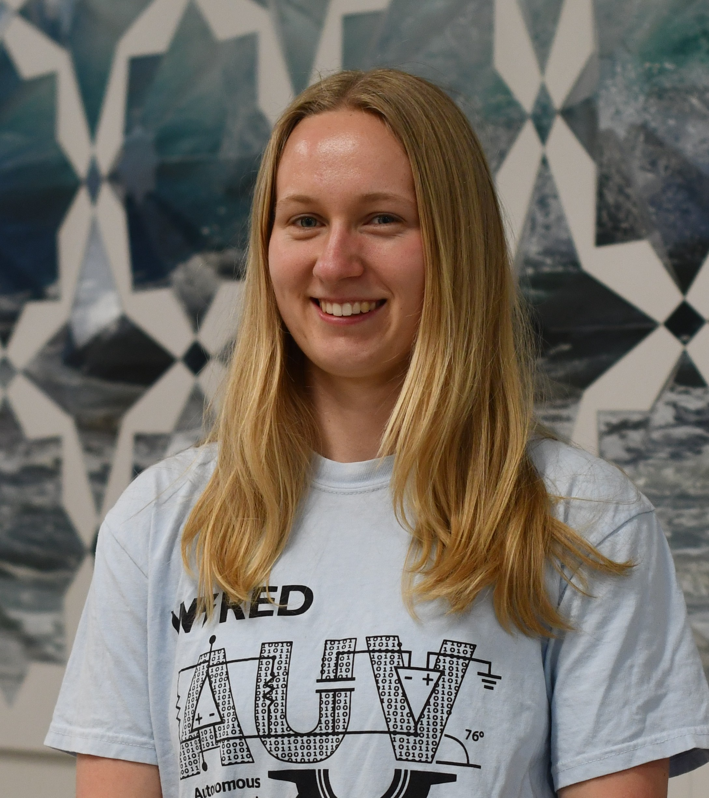

B.S. Electrical Engineering (May '27) | M.S. Electrical Engineering (Dec '27)
Texas A&M University | Honors Student | Engineering Honors Ambassador

I'm a graduate-track Electrical Engineering student at Texas A&M University, focused on robotic hardware: custom PCB design, power electronics, embedded systems and mechatronic integration.
My goal: to push the boundaries of hardware for autonomous and surgical robots. After completing my Master's in December 2027, I aim to lead the development of next-generation robotic hardware that bridges digital intelligence and physical execution.
Selected for Altium's global scholarship program. I'm currently completing its Altium Designer training.
Summer 2025 researcher at the Laboratory for Computational Sensing and Robotics.
Texas A&M University, with a minor in Computer Science.
Designed the Actuator PCB, Battery Management Board and Jetson breakout board for a RoboSub underwater robot.
Power Electronics · In progressA 4-layer PCB for a three-phase matrix converter rectifier aimed at AI-server power.
Internship · Summer 2026EE Hardware Test Engineer Intern. Designed a production test rack for testing multiple devices in parallel.
Research · Johns HopkinsA ROS 2 haptic teleoperation system for a UR5 arm, built to collect surgical imitation-learning data.
Research · Texas A&MProbing how well Vision-Language-Action models such as SmolVLA and ACT generalize, using SO101 arms.
Aerial ManipulationA drone carrying an SO101 arm, running SmolVLA inference on an onboard Jetson.
Research · Embedded SystemsSTM32 firmware and a Flutter BLE app for real-time electrochemical biosensing.
Altium Designer (schematic & multilayer layout), high-current PCB design, power electronics, GaN gate drive, DC-DC converters, design for manufacturing
STM32 firmware (C/C++), I²C / SPI / DMA / UART, NVIDIA Jetson, Raspberry Pi
PID control, servo & actuator systems, Zivid 3D vision, UR5 teleoperation, Force Dimension haptics
Python, C++, ROS 2 (Humble/Galactic), LeRobot, PyTorch, TensorFlow, Dart/Flutter
Technical excellence is only as effective as the team behind it. I prioritize clear communication, mentorship and interdisciplinary collaboration.
I'm always open to discussing research collaborations or internship opportunities in robotics hardware.